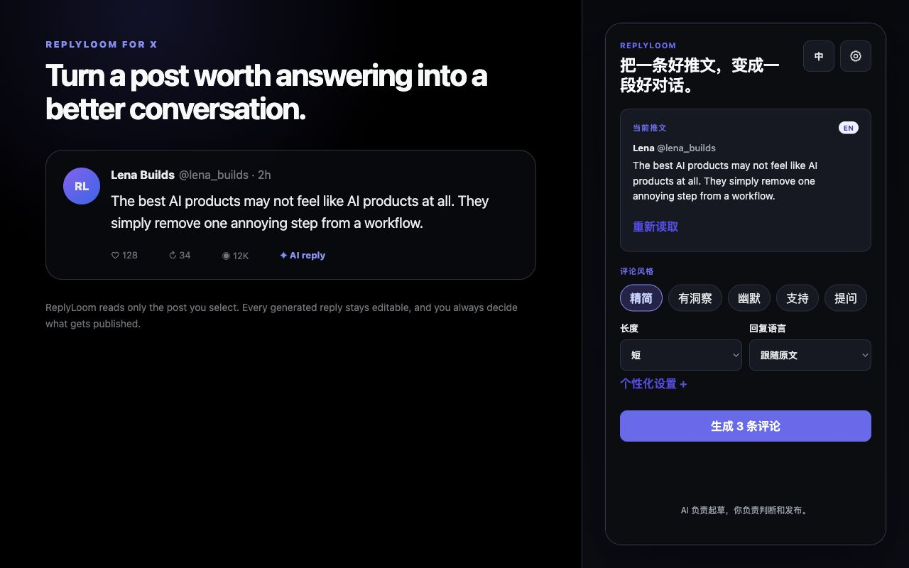

Pick the post
Click AI reply under the X post you want to answer. ReplyLoom reads only that selected context.
Turn a post worth answering into three thoughtful, editable drafts. Use your own model and publish only when it sounds like you.

Choose a post, shape the angle, review the drafts, and insert one into X. ReplyLoom stops before publish.
Click AI reply under the X post you want to answer. ReplyLoom reads only that selected context.
Set tone, length, language, and optional voice guidance. Generate three genuinely different drafts.
Edit a draft, insert it into X, and publish manually only after it sounds right.
Connect directly to a supported OpenAI-compatible provider. Your key is stored in Chrome only if you choose to save it.
ReplyLoom never batch-replies or clicks the final Reply button. It sends selected context only to the model provider you choose and runs no developer-owned model proxy.
Read the privacy policy →